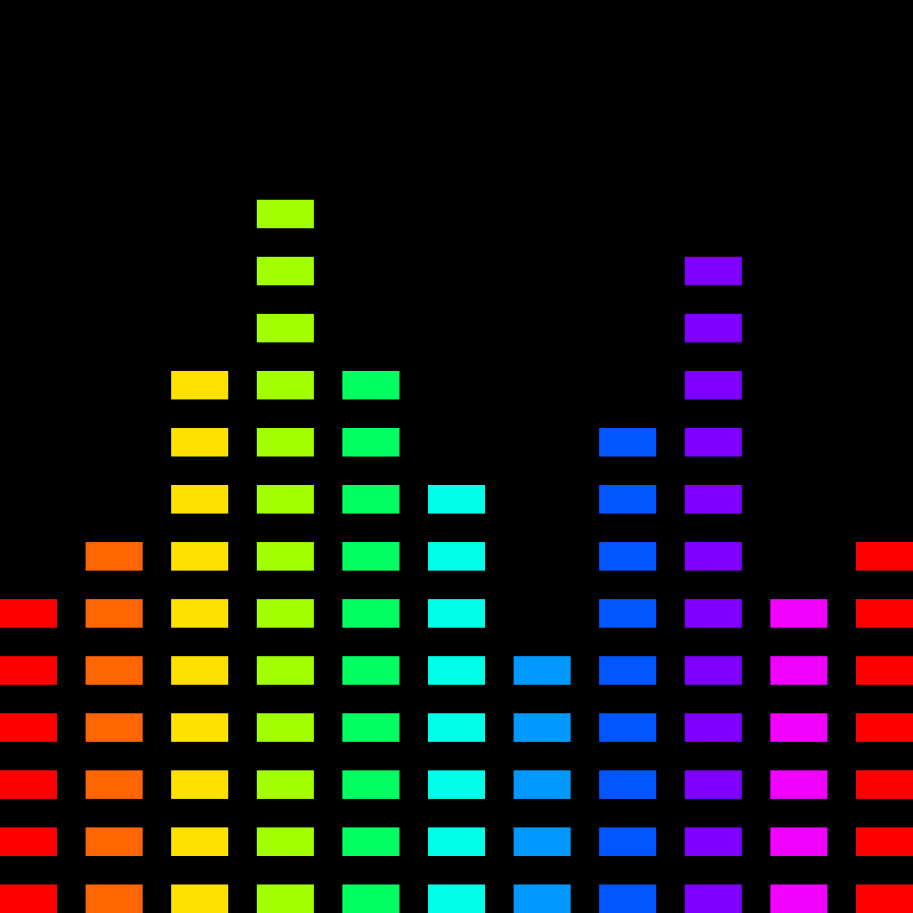

This App is a recorder with random effects.
It gives a different stimulus to your composition and sampling.
Distortion, delay, and reverb effect presets and parameters are all set randomly.
The order in which effects are applied, such as delay -> distortion -> reverb, is also random.
Recorded files are stored on the iPhone or iPad.
You can easily play, stop, and delete from the app screen.
It is recommended to record for a long time because reverberation sounds are often included.
A folder named R.E.Recorder will be created in the iPhone folder and the audio file will be saved there.